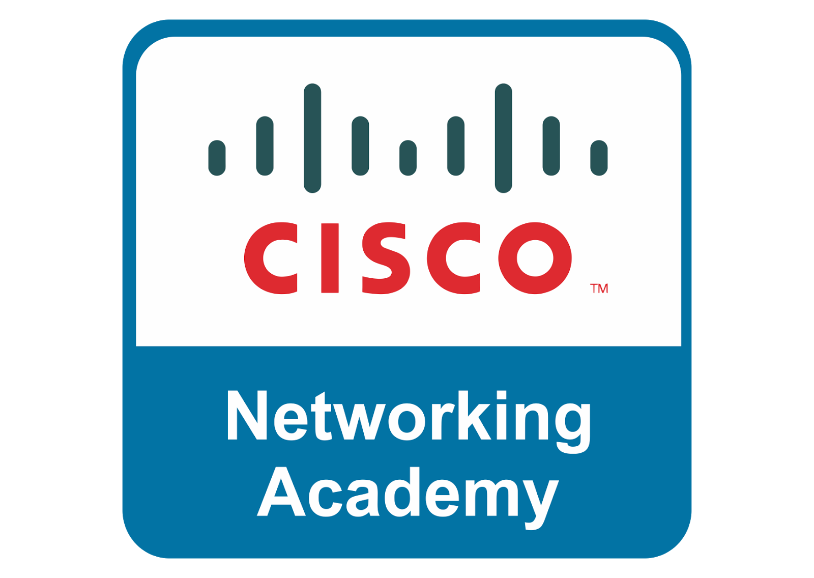

I have been a particpating member of of the TAMU cybersecurity club since January 2024 and my goal for this semester is to be a more active contributer in this club.
As a member of this club I will be helping newer members to catch up on penetration testing practice problems and hopefully contributing as an officer or activity leader.

Through the CISCO Networking Academy I am now helping to guide members less experienced with network architecture to learn, understand, and hopefully to earn a CCNA from CISCO.
The National Cyber League capture the flag competetion is participated in by the cybersecurity club in which I will be competing this year as a member in both the group event and individual event.
Through the Aggie Coding Club I have been a project participant and plan on being a project leader to offer the same opprotunity to younger aspiring developers.